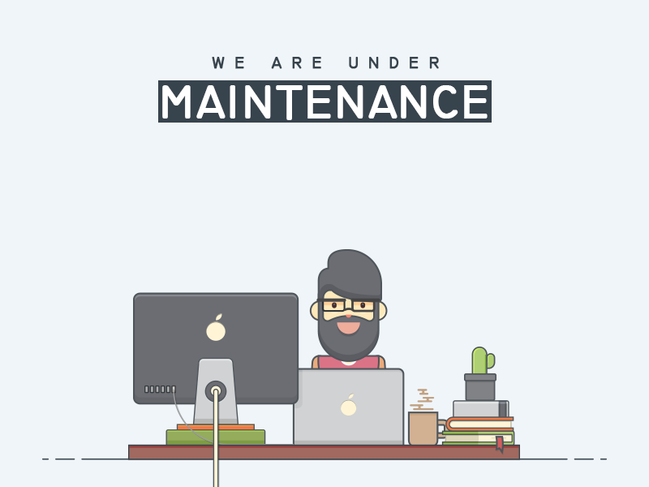

<!--The content below is only a placeholder and can be replaced.-->


<div [ngClass]=" [service.checkLogin() ? 'wrapper' :'show' ]">
    <router-outlet (activate)="changeOfRoutes()"></router-outlet>
</div>

<app-top-navbar *ngIf="service.checkLogin()"></app-top-navbar>


<!-- No internet connection Modal-->
<!-- <div class="modal" role="dialog" id="siteDownModal">
    <div class="modal-dialog">
        <div class="modal-content">
            <div class="modal-header">
                <h4>Message !!!</h4>
                <button class="close" data-dismiss="modal">&times;</button>
            </div>
            <div class="modal-body">
                
                <h4 class="text-center">ATOM Site is Under Maintenance</h4>
                <p class="text-center">
                    <b>Note</b>:When ATOM application is up.<br>
                    Please delete the cache. Shortcut:<b>CTRL + SHIFT + R</b>
                </p>
            </div>
            <div class="modal-footer">
                <button class="btn btn-default" data-dismiss="modal">Close</button>
            </div>
        </div>
    </div>
</div> -->